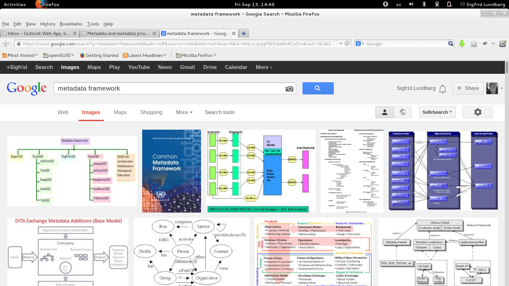
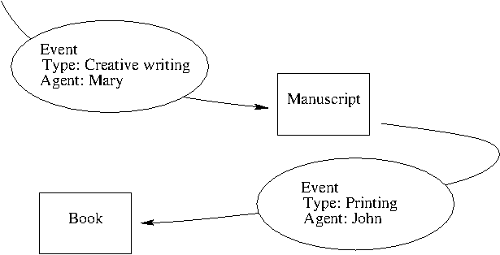
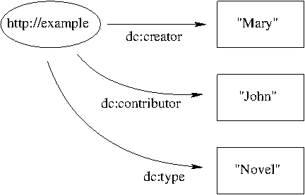
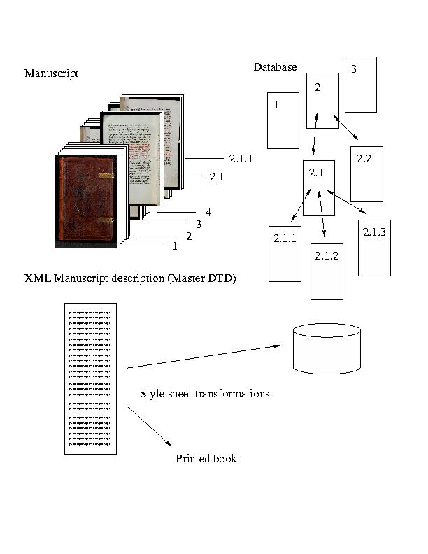

Metadata in a Library on the information high-way

After you've suffered from this, I hope that you should

- be less annoyed with acronyms. After all, they are just acronyms. They don't bite, and you can find them in Wikipedia.
- actually understand a few acronyms, and have an idea why someone invented them.
- perhaps have a more pragmatic how metadata records come about
- have a better understanding for the Internet and its standards.
I also hope that you do not dislike graphs after this session
SIFD descriptive metadata
Carl Lagoze
From Static to Dynamic Surrogates
Resource Discovery in the Digital Age
Roadmap for the next few hours
He giveth to each man his food
- Look at a form
- Try to deduce the metadata philosphy
- Make some reflections on use cases for metadata
A worked hypothetical example
- What if you were Yoko Ono?
- What could you get out of owning the estate of John Lennon?
- Let's go to the Copyright
Clearance Center. Bring a tune, like
Let it be
, and mind you, have $35 ready for the registration fee.
Event Centric (i)
Keeping track of change

Event centric (ii)

© Godfrey Rust See also <INdECS> Metadata Framework
Resource Centric
For resource discovery

Comparison
| Event centric | Resource centric |
|---|---|
| Mary writes a book | The books author is Mary |
| John prints a book | The printer is John |
The Library should
acquire, preserve, organize, and provide access
to resources, in order to enable its patrons to
find, identify, select and obtain access to
to them
Practice your skills: A web portal for historical ships and marine archaeology
Construct your own metadata framework
Assume that you are building a repository containing data on historical ships and marine archaeology
Think of
Metadata should support the collection's target audiences and content providers.
- Target audience
- Collection development
- Scope and selection criteria
- Event based vs. Resource centric
- Data sets on excavation areas
- Data sets on wrecks of named ships
- Related historical events
- Geographical Information Systems (GIS)?
- A gazetteer?
- ...
Read more
Nothing is forever
At some stage in the history of any ivy league cultural heritage institution it will require new ivy

The Cathedral and the Bazaar

- On the Internet all the information comes from the bazaar.
- On the Internet there are few cathedrals. Usually less than three, and they get everything from the bazaar
- On the Internet, you must recognize other people
- Or the Internet will never recognize you
Mind you
We are not a cathedral, but one of the shops in the bazaar

On the Internet, recognition is linking using an URI
Universal Resource Identifier (URI)
- The same as a URL, a term which should be avoided, with URI scheme http or ftp.
- an Universal Resource Name is an URI with URI scheme URN
Linked (Open) Data (LOD)
Our great leader says (slightly edited by me):
- Use URIs as names for things
- Use HTTP URIs so that people can look up those names.
- When someone looks up a URI, provide useful information, using standards
- Include links to other URIs. so that they can discover more things.
Where to link?
Name, subject heading and title authority databases, Encyclopedias, gazetteers...
On the semantic web we represent subjects as links
Some METADATA and DATA schemas
- Work
- Process
- Structure
Dublin Core
http://dublincore.org/| Content | Intellectual property | Instantiation |
|---|---|---|
|
Title Subject Description Source Language Relation Coverage |
Creator Publisher Contributor Rights |
Date Format Identifier Type |
Music Encoding Initiative (MEI)
http://music-encoding.org/
TEI Manuscript Description
S:t Laurentius Digital Manuscript Library (See TEI guidelines)
Encoded Archival Description (EAD)
Metadata Object Description Schema (MODS)
http://www.loc.gov/standards/mods/- Popular system which is easier to use but still compatible with MARC21
- Much used in presenting digitized material here at KB
Metadata Encoding and Transmission Standard (METS)
http://www.loc.gov/standards/mets/- A package for other metadata (e.g., Metadata Object Description Schema)
- A table of contents
- A recipe
BIBFRAME
http://bibframe.org/
Source: The BIBFRAME model
Now, why does the world need METS when it's already got MODS?

- In the bazaar we must be able sell fish, as well as meat and vegetables
- Don't try to sell meat or fish to vegans!
- One standard isn't enough
- One size doesn't fit all
Text Encoding Initiative (TEI)
<div>
<opener>
<address>
<addrLine>Till</addrLine>
<name
reg="Strindberg, Kerstin"
type="person">Kerstin Strindberg</name>
</address>
<dateline>
<name type="place">Lund</name>
<date value="1897-03-29">29 Mars 1897</date>
</dateline>
<salute>Kära stackars Lilltösen,</salute>
</opener>
<p>Du har varit sjuk, har haft det svårt och jag
trodde du var ond. Förlåt! Men jag anade det,
kände det. Den natten du sjuknade drömde jag,
att jag såg dig falla ned från en trädtopp,
du föll från gren till gren; men när jag full
av ängslan kom springande, satt du helt lugnt på
nedersta grenen. Alltså tur i sista ögonblicket.</p>
<p>Vad säger
<name type="person"
reg="Uhl, Frida">Frida</name>-mamma om din sjukdom?
</p>
<p><name type="person"
reg="Uhl, Marie">Mormor</name> har rätt:
livet förgår och det bästa få vi
ej njuta. Vi leva var och en i sin ödemark,
främmande för varandra, åtskils, ansatta av
samvetsagg. Så kan våra öden länkas.</p>
<p>Här händer ingenting. Har tråkigt,
då jag icke kan arbeta; väntar bara på
ett slut, vilket som helst, i eländet.</p>
<p>Våren har gått sin väg, luften är svart
som i november; regn som i oktober.
Kallt som i december.</p>
<closer>
<salute>Lev väl!</salute>
<signed>Pappa <name type="person"
reg="Strindberg, August">August</name>.</signed>
</closer>
</div>
Round Up
If you try make your own "standard" the chances are slim that it'll be adopted by others
- You'll have to maintain it yourself
- Document it on your own
- Migrate data all on your own
- Transform all data when collaborating with others
- Not invented here attitudes are expensive in the long run.
Use standards
which are capable to live longer than the applications using them
applications become obsolete in less than a decade
data should be useful in many decades
data still require the loving care of humans
But KISS
Keep It Simple, Stupid
or at least not more complicated than necessary